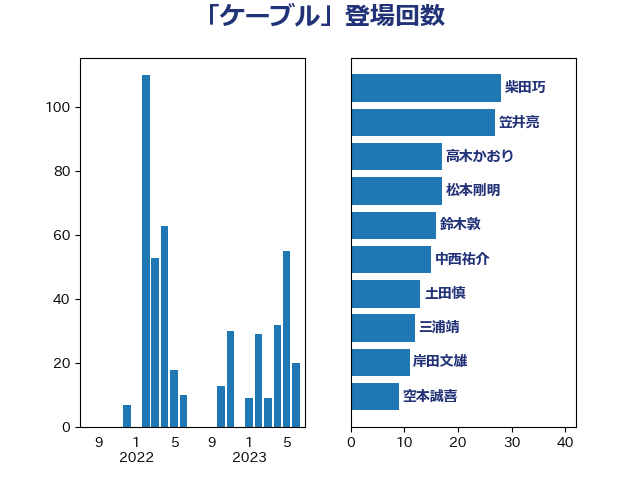

単語「ケーブル」

| 柴田巧 | 日本維新の会 | 28 回 |
| 笠井亮 | 日本共産党 | 27 回 |
| 高木かおり | 日本維新の会 | 17 回 |
| 松本剛明 | 自由民主党 | 17 回 |
| 鈴木敦 | 国民民主党 | 16 回 |
| 中西祐介 | 自由民主党 | 15 回 |
| 土田慎 | 自由民主党 | 13 回 |
| 三浦靖 | 自由民主党 | 12 回 |
| 岸田文雄 | 自由民主党 | 11 回 |
| 空本誠喜 | 日本維新の会 | 9 回 |
| 西岡秀子 | 国民民主党 | 7 回 |
| 金子恭之 | 自由民主党 | 6 回 |
| 玄葉光一郎 | 立憲民主党 | 6 回 |
| 山本博司 | 公明党 | 6 回 |
| 萩生田光一 | 自由民主党 | 5 回 |
| 田島麻衣子 | 立憲民主党 | 5 回 |
| 保岡宏武 | 自由民主党 | 5 回 |
| 泉健太 | 立憲民主党 | 4 回 |
| 新妻秀規 | 公明党 | 4 回 |
| 寺田稔 | 自由民主党 | 4 回 |
| 若宮健嗣 | 自由民主党 | 3 回 |
| 福田昭夫 | 立憲民主党 | 3 回 |
| 市村浩一郎 | 日本維新の会 | 3 回 |
| 小野田紀美 | 自由民主党 | 3 回 |
| 宮下一郎 | 自由民主党 | 3 回 |
| 塩崎彰久 | 自由民主党 | 3 回 |
| 音喜多駿 | 日本維新の会 | 2 回 |
| 鈴木義弘 | 国民民主党 | 2 回 |
| 芳賀道也 | 国民民主党 | 2 回 |
| 田畑裕明 | 自由民主党 | 2 回 |
| 柘植芳文 | 自由民主党 | 2 回 |
| 平木大作 | 公明党 | 2 回 |
| 尾身朝子 | 自由民主党 | 2 回 |
| 小林鷹之 | 自由民主党 | 2 回 |
| 佐藤正久 | 自由民主党 | 2 回 |
| 井坂信彦 | 立憲民主党 | 2 回 |
| 齊藤健一郎 | 無所属 | 1 回 |
| 高良鉄美 | 無所属 | 1 回 |
| 青山繁晴 | 自由民主党 | 1 回 |
| 阿部弘樹 | 日本維新の会 | 1 回 |
| 重徳和彦 | 立憲民主党 | 1 回 |
| 辻元清美 | 立憲民主党 | 1 回 |
| 赤嶺政賢 | 日本共産党 | 1 回 |
| 谷田川元 | 立憲民主党 | 1 回 |
| 藤井比早之 | 自由民主党 | 1 回 |
| 篠原孝 | 立憲民主党 | 1 回 |
| 福島伸享 | 無所属 | 1 回 |
| 礒崎哲史 | 国民民主党 | 1 回 |
| 瀬戸隆一 | 自由民主党 | 1 回 |
| 浅野哲 | 国民民主党 | 1 回 |
| 森山浩行 | 立憲民主党 | 1 回 |
| 柳ヶ瀬裕文 | 日本維新の会 | 1 回 |
| 平山佐知子 | 無所属 | 1 回 |
| 岸真紀子 | 立憲民主党 | 1 回 |
| 山田太郎 | 自由民主党 | 1 回 |
| 山岡達丸 | 立憲民主党 | 1 回 |
| 小野泰輔 | 日本維新の会 | 1 回 |
| 小倉將信 | 自由民主党 | 1 回 |
| 奥野総一郎 | 立憲民主党 | 1 回 |
| 吉田久美子 | 公明党 | 1 回 |
| 古賀之士 | 立憲民主党 | 1 回 |
| 伊波洋一 | 無所属 | 1 回 |